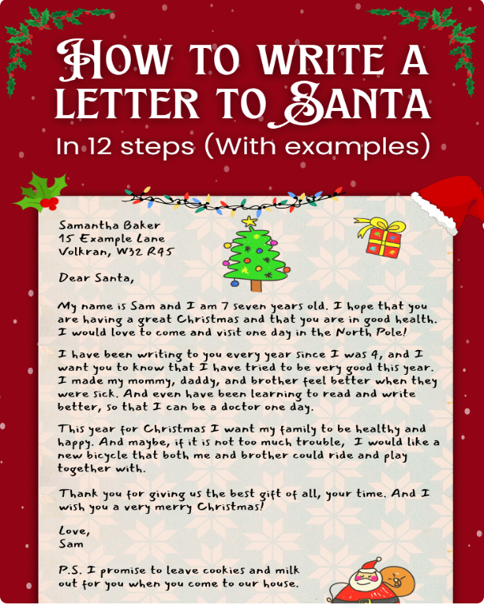
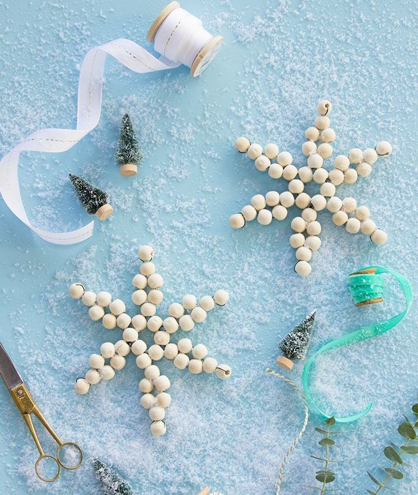
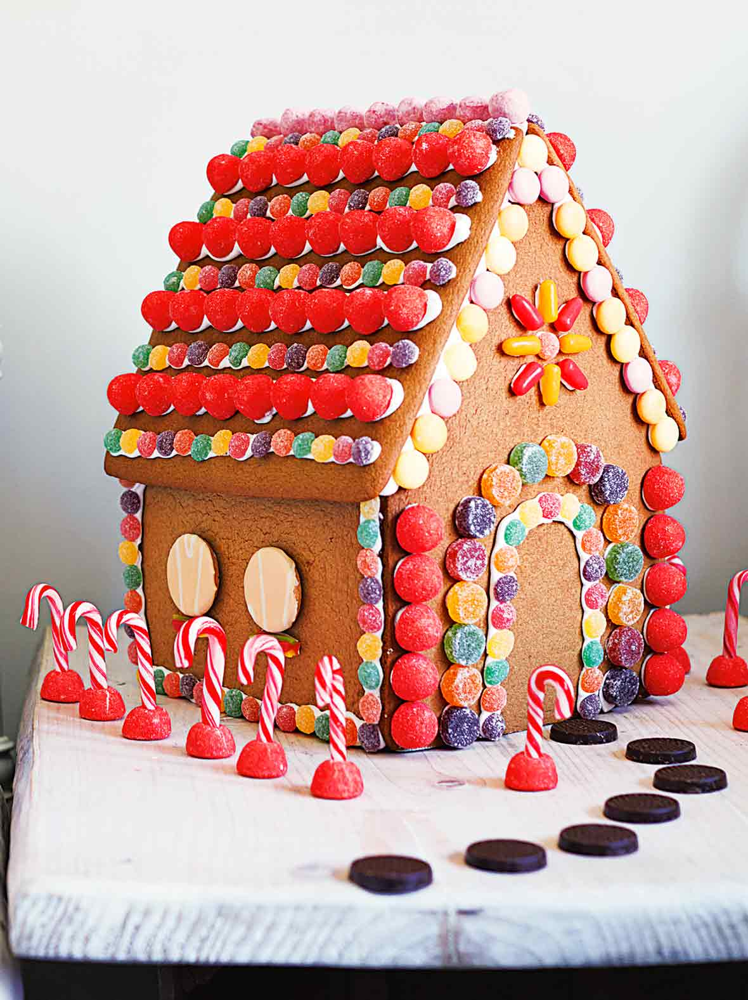
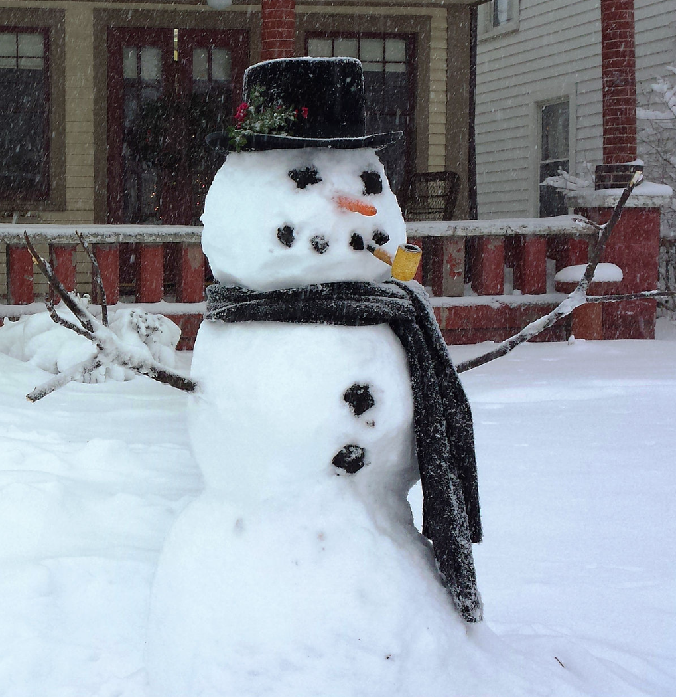
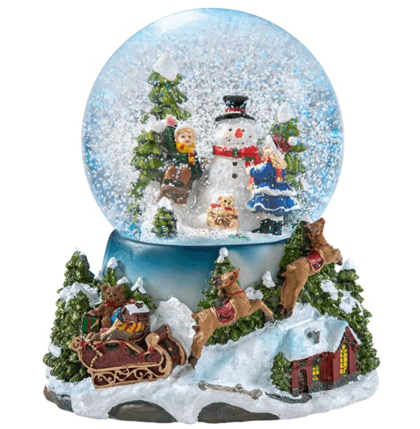
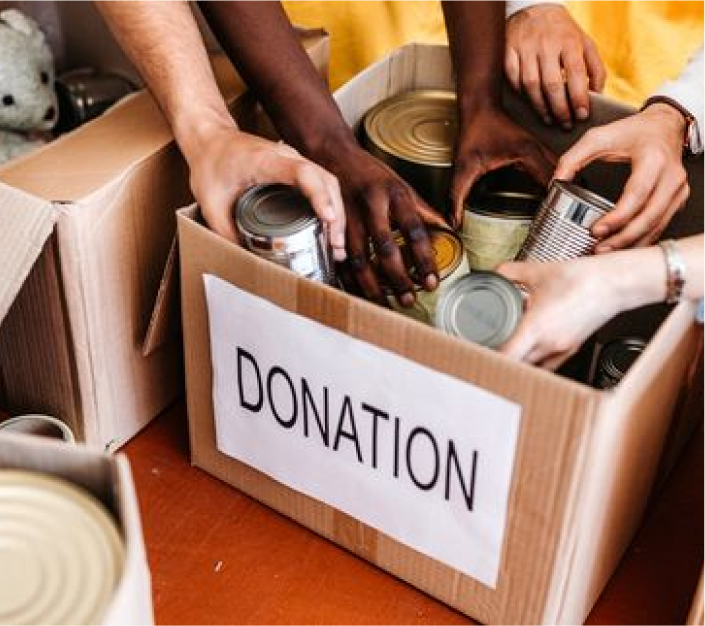
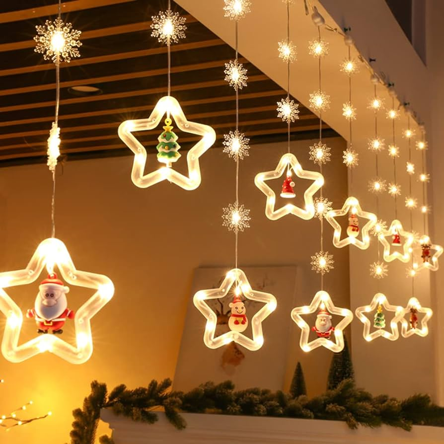

CHIRSTMAS BUCKET LIST IDEAS
1. Write A Letter To Santa

It's that time of year again when millions of people across the world will be writing letters to
Santa. But how do you start such an important letter?
Click here
to help you write a letter to Santa Claus in 12 easy steps.
You can even get a return letter postmarked from the North Pole.
You can even get a return letter postmarked from the North Pole.
2. Make An Ornament

Get into the holiday spirit by hosting a fun-filled day of Christmas crafting! Making
holiday-themed DIYs are a creative way to save money on decorations, especially if you can't
find the unique and personalized ornaments you seek for your tree. Create your own homemade
Christmas ornaments for the holiday season.
Check 69 DIY Christmas Ornaments Examples
3. Eat A Candy Cane
4. Bake Cookies
It's the sweetest way to spread holiday cheer.
82 Best Christmas Cookie Recipes to Start the Baking Season
92 Easy Christmas Cookie Recipes
82 Best Christmas Cookie Recipes to Start the Baking Season
92 Easy Christmas Cookie Recipes
5. Build Gingerbread House

Boosts creativity. Building a gingerbread house allows your creativity to run wild. The graham
crackers serve as a blank canvas for you to create the house you imagine. Create it how you like
or want, rather than follow the box display. Buy one at local supermarket. Let your creativity
shine!
6. Go Iceskating
Boosts creativity. Building a gingerbread house allows your creativity to run wild. The graham
crackers serve as a blank canvas for you to create the house you imagine. Create it how you like
or want, rather than follow the box display. Buy one at local supermarket. Let your creativity
shine!
Where to go Ice Skating in Winter Around the World
Where to go Ice Skating in Winter Around the World
7. Drink Hot Cocoa
8. Wrap A Present
9. Christmas Movie Night
10. Sing Christmas Song
11. Build A Snowman

No snow in your area? No worries, build one in the
game
!
12. Shake A Snowball

Snowfall Wishes, Shake to Dish: Sparkle Up Your Snowy Bliss!
13. Wear Christmas Sweater

14. Kiss Under Mistletoe
15. Donate Food/Toy

With the holiday season among us and calls for donations to help communities affected by
poverty, bringing items to local food drives is an easy way to give back and fight hunger.
Things you should avoid to donate
16. Hang Twinkle Light

With the holiday season among us and calls for donations to help communities affected by
poverty, bringing items to local food drives is an easy way to give back and fight hunger.